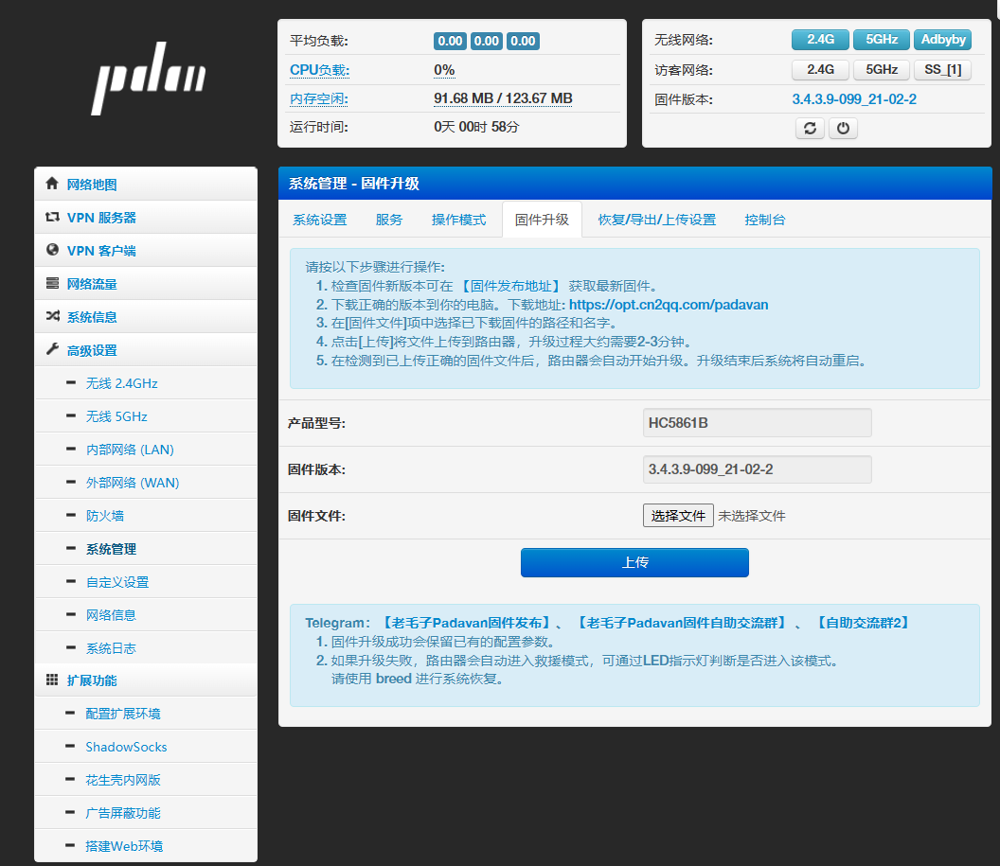
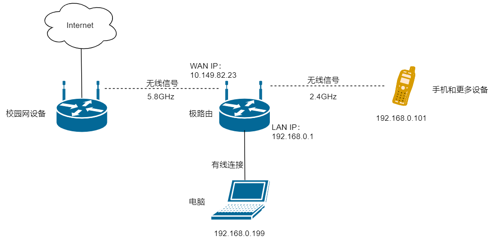
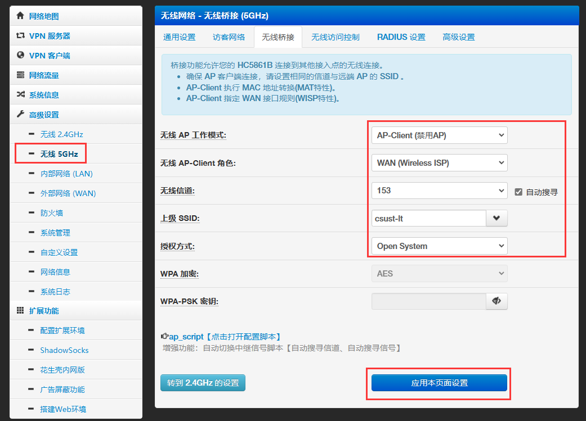
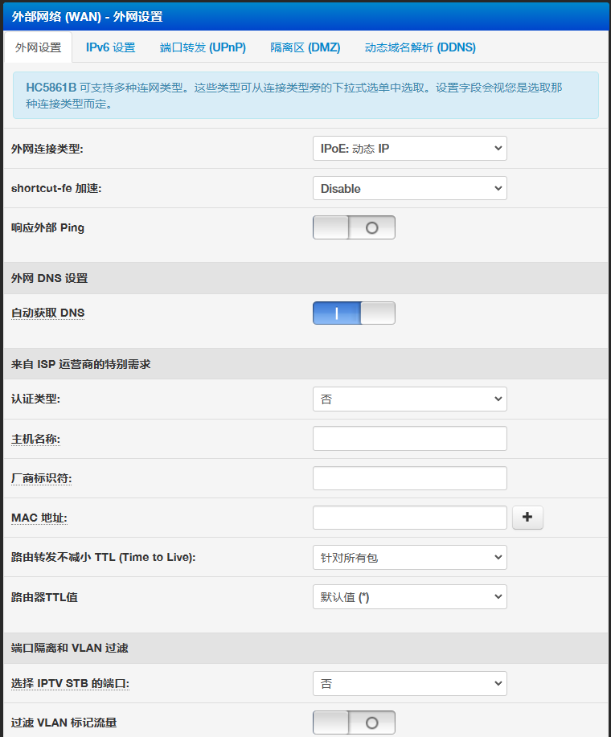

# 本文未完成
# 引用
本文大部分内容可参考：
长沙理工大学：校园网解除共享限制
路由器刷机参考教程（非本次使用）：
极路由 Enjoy 1200 HC5861B OpenWRT 固件 Rosy 主题
# 原因与现象
为了维护运营商利益，校园网设置了一些检测与规则，对同时登录校园网的设备数量作出了严格的限制，并且不允许终端用户进行网络共享。
具体表现为，当用户使用电脑、手机等的热点、无线信号桥等方法时，只要有第二台设备联网，就会在一定条件下被检测发现，随后此账号将无法访问网络，并自动将网页重定向到登录界面（或 1.1.1.3，但这个页面不能加载出来）。
# 原理
根据引用文章，可以得知共享检测主要通过 80 端口下的 HTTP 报文中浏览器 UA 的区别来实现，可以看到这个限制条件比较多，而且检测周期并不短；因此会出现稳定共享的时间时长时短的现象。
此外，还可能会通过其他方法检测，包括但不限于 TTL、IPID、侵入式检测等等。
# 准备工作
为实现稳定的校园网共享，首先需要选择正确的系统：必须使用 OpenWRT 或 Pavanda 等软路由系统。
本文基于 Pavanda 操作。
# 路由选型
如果你还没有软路由或者合适的路由器，那么选购路由器就是第一步了。我最终的选择是二手极路由 Enjoy 1200，型号 HC5861B。极路由虽然已经倒闭，但它的产品可玩性和性价比确实是相对较好的。
淘宝入手价格 40 元，由商家代刷 Breed。
需要注意的是，这一款路由器不支持 USB，电源接口也是 12V DC 而非 5V Micro-USB，如果有这两个功能需求的话可以考虑极路由 3 或其他产品。
# 检查与刷机
收货后先简单清理积灰，检查网口是否有积聚大量灰尘，天线是否正常连接、旋转。
随后插入电源开机，连接电脑网口到路由器 LAN 1 口，等待 IP 自动配置完成，进入默认网关的地址（本次为 192.168.132.1，极路由原厂固件可能为 192.168.199.1）
使用默认的管理员账号密码（admin）登录后，发现这台机器已经刷好了老毛子固件（Padavan）了：

所以省下了很多时间，虽然我的计划是使用 OpenWrt，但 Padavan 本质上是一样的。
如果需要刷机教程，请参考引用文章，或直接搜索路由型号 + OpenWrt，即可找到一些刷机教程。
# 网络拓扑

我的目标是达成这样的拓扑，实际上就是一个无线 “路由”，也就是将无线信号作为 WAN，执行 NAT 和防火墙规则后建立子网，设备均接入子网中。
# 基础配置
# 路由器接入无线网络
直接参考这张图即可：

2.4G 和 5G 只能有一个用于 AP-Client，另一个必须禁用桥接。
需要注意的是，路由器需要用一个频段接入校园网，另一个频段用于发射信号；虽然可以选择 client+AP 来实现单频复用，实际上只用 5GHz 的话效果也不错，但我收到的这台路由器不知道为何 5G 能力极其孱弱（无遮挡 50cm 距离下 client 都不能跑满协商速率），而 2.4G 能力极强（对周围的无线鼠标、蓝牙手柄等造成严重干扰），因此这里不使用这种方法。
懒得删改的原文：
这里还涉及到频段的选择，最开始我使用 2.4G 接入校园网、5G 用于共享，但随后我发现无线鼠标的工作会受到较严重的干扰（接收器也工作在 2.4G 频率上），因此后续改为 5G 接入、2.4G 共享。
此外，网络性能也是一个需要关心的重点，5GHz 总能提供更优秀的表现，但这里我们只能用于一个目的；由于我平时主要使用电脑上网，而电脑是通过网线连接到路由器的，因此选择 5G 接入是更好的。实际上，这种情况下 2.4G 的表现也不差，宿舍面积小、干扰少，多次测试下来延迟在 30ms 以内，速度 8-9MB/s，可以满足 1080P 视频观看和正常游戏。
# 修改网络配置
如果对内网网段不敏感（例如你只想要正常上网，平时不开发网页、软件、游戏、不做任何测试，那么这一段可以跳过）
在左侧选择外部网络（WAN），可参考下图配置：

LAN 配置同理，设置想要的网段、DNS、静态路由等。
# 通过 NAT 连接 ipv6
由于我希望使用到正常的 ipv6，故单独在此写出方案；对于绝大多数日常网络而言，关闭 ipv6 可能反而有助于提高稳定性。
参考文章：校园网环境下 Openwrt 配置 ipv6 教程 —— 以 nat6 为例
-
NAT 是什么？
NAT 是出现在 ipv4 中的技术；由于 ipv4 地址空间有限（总约 42 亿个），无法满足爆炸式增长的网络设备入网需求，因此出现了网络地址转换（Network Address Translation）技术；它的作用就是缓解 ipv4 地址消耗，尽量在 ipv6 部署完全之前满足原有上网需求。
它的工作原理很简单，我们平时使用路由器上网的时候就至少会有一次 NAT 过程，路由器将一个外网（WAN）的地址映射到多个内网地址（通常为 192.168.x.x 或 10.x.x.x），这样一个路由器下的设备就可以共用一个外网 IP，大幅缓解了地址消耗，同时解决了耗尽的影响。
NAT 有助于提高网络安全性，因为路由器上可以部署非常高效的防火墙，也可以天然阻断所有传入连接，但这样的技术也会带来问题；最大的问题无疑就是点对点连接变得不可能，因此游戏联机、网站建设等都会变得很困难。
在我的使用场景下，Minecraft 联机是最常见的点对点连接应用，此前的解决方案均为 FRP 内网穿透（见前文章）。 -
为什么我一定要有 ipv6 连接？
很简单，ipv6 地址池极大，运营商也并未刻意限制用户的 ipv6 访问（至少我没有遇到过哪个运营商在 ipv6 上用 NAT 的）（但是教育网除外）。
因此，大多数用户只要开启了 ipv6，就能获取到公网 IP。这对于点对点连接来说无疑是非常有帮助的。 -
教育网干了什么？
一般运营商在家用、商用宽带里分配的 ipv6 都是 / 64 的前缀，这意味着路由器拿到的地址里面还包含了大量的可用地址，用于给后续设备分配 ipv6 地址；
但教育网的 ipv6 则直接分配了 / 128 的地址，这就意味着它给你的地址只能用于一台设备。也就是说，想要共享 ipv6，必须使用 NAT。